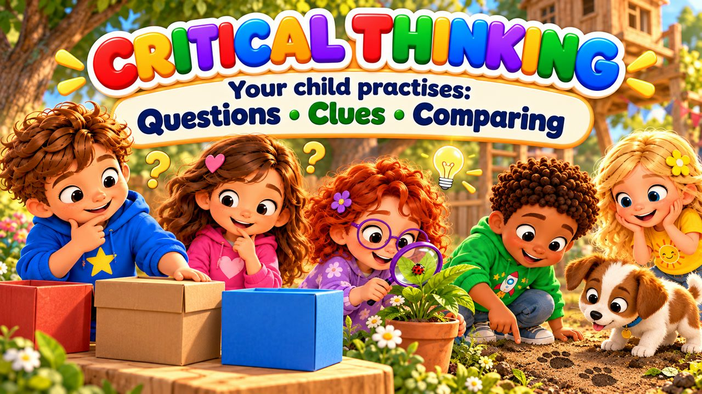
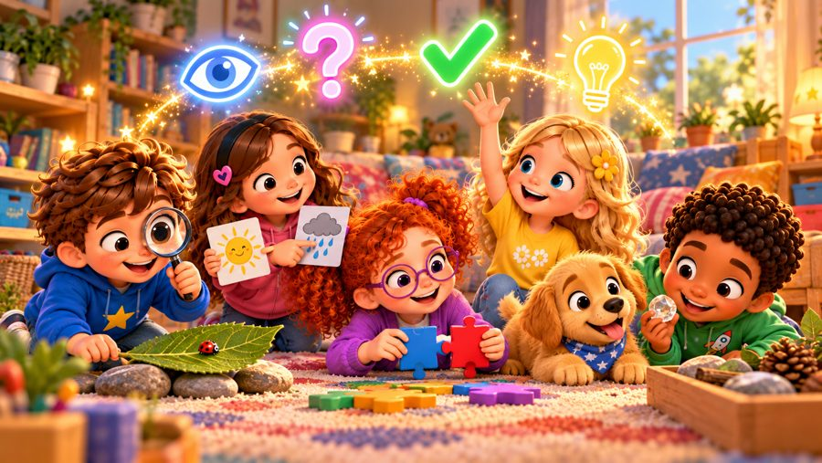

Think, Think, Think
Think, think, think! 🔍 Sing along with Max, Mia, Jay, Lily, Rosie and Buddy as they learn to look closely, ask questions, compare ideas and check the evidence before deciding.
Max compares three boxes to find the right fit. Rosie tests whether plants need light. Jay investigates muddy footprints instead of blaming Buddy too quickly. Each story shows children that good thinking is not about knowing every answer — it is about asking, checking and being willing to change your mind when you learn something new.

▶💡 Why this skill matters: critical thinking
Critical thinking helps children slow down, ask questions and check evidence instead of believing the first idea they hear. It supports safer choices, stronger problem solving and real curiosity. When your child makes a quick guess, try asking: “What clues do we have?” and “How could we check?”
👨👩👧 What your child learns
- Look closely before choosing
- Ask “why?” and “how?”
- Compare ideas and look for clues
- Test whether an idea is true
- Change your mind when new evidence appears
💬 Talk about it after the song
- How did Max choose the right box?
- What did Rosie do instead of simply guessing?
- Why were the muddy prints not Buddy's?
- When did you learn something that changed your mind?
🏅 Quiz & Certificate
Watched the song together? Now read each question aloud — your child points to the right picture. Answer all 6 questions and your child earns a printable certificate!
🔒 The name is only used to draw the certificate on your device. We don't save or send anything.
You did it! 🎉
All 6 answers are right! Type your child's name to make the certificate.
🖨️ Free printables
Free for home and classroom use. Print on A4 or Letter paper.
🖼️ Scenes from the song




🎵 More songs


🎤 Lyrics – Think, Think, Think
Think, think, think!
Look and see!
Ask a question: “What could it be?”
Think, think, think!
Check what's true!
Look for clues before you choose!
Ask! Compare! Look again!
Try an idea, then check it again!
I don't have to guess too quick —
I can stop and THINK, THINK, THINK!